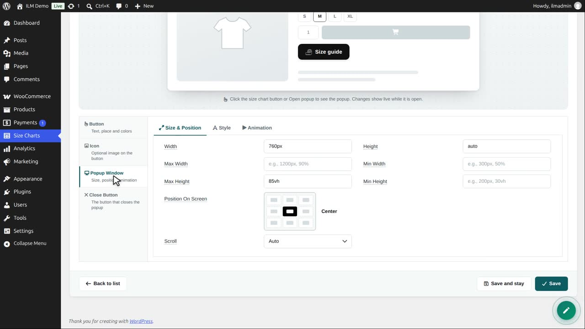
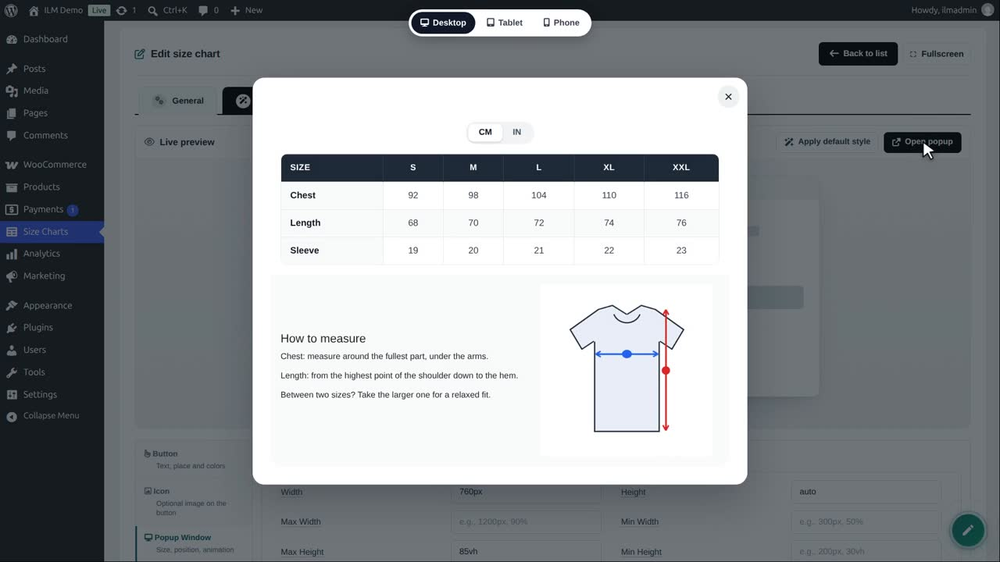
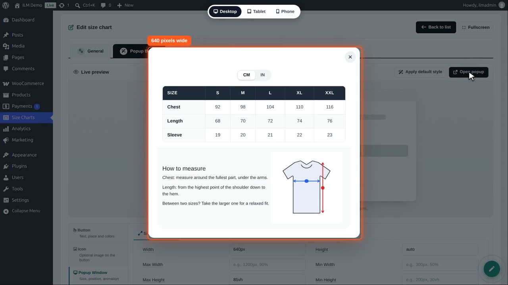
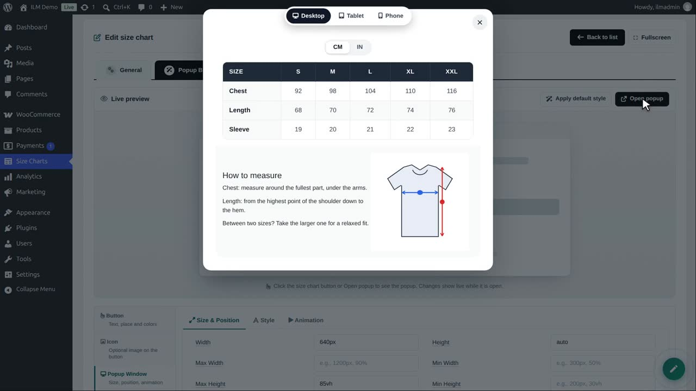
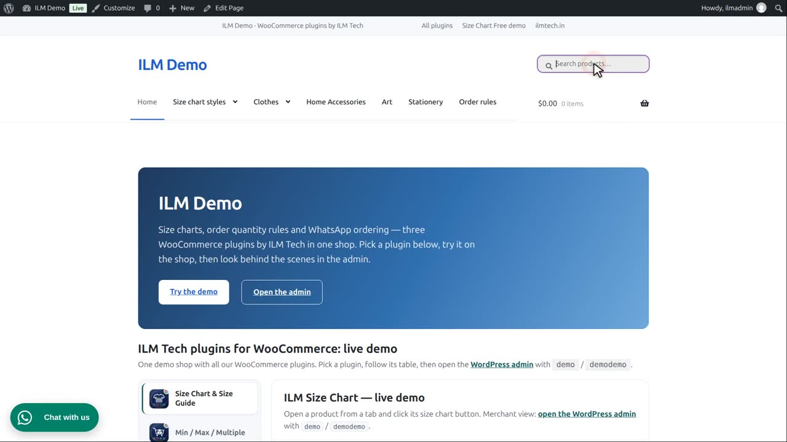
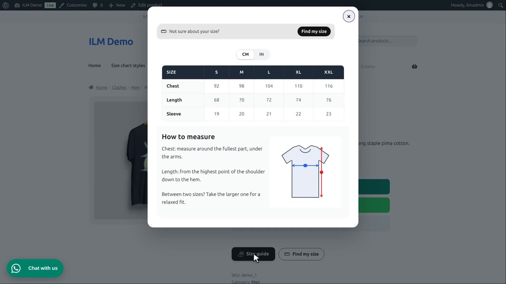
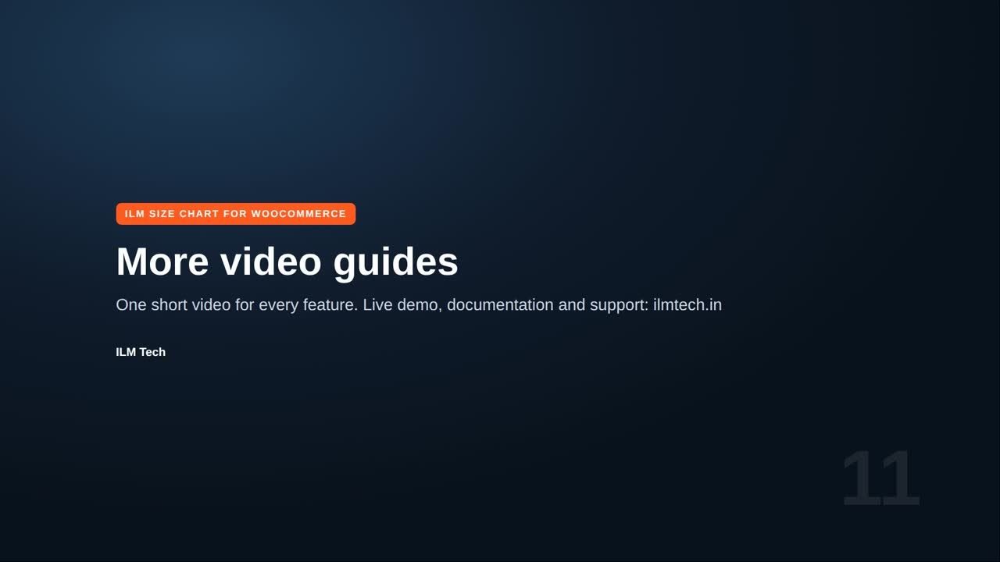

Edit the chart, open Popup Button, then Popup Window, Size and Position.

Click Open popup to see the window with your real chart. It stays open while you change the settings.

Width: we type 640 pixels. You can use pixels or percent of the screen. Max width and min width keep it within limits on large and small screens.

Position on screen: the middle, or the top, a side, or the bottom. We choose Top center.

When the chart is bigger than the window, Scroll adds a scroll bar, Visible lets it grow, and Hidden cuts it. Scroll is best for long charts.

Save. In the shop, the window is narrower and opens at the top of the screen.

On phones the window always fits the screen width.
